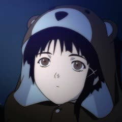

Home
Videos
Blog
Archive
Contact
Blogs & Rambles

We Need to Talk About AI Writing
Anime Review: Key the Metal Idol
Becoming 20
An Introduction to Culinary Therapy
AI Soykaf Gets Real
Schizoid-ism and Meaninglessness